Prepare reliable data
Inspect metadata, remove duplicated analytical records and complete missing NMR values without altering the oil labels.
Data analysis · NMR · SQL · Machine learning
A reproducible workflow for preparing, storing and analysing NMR measurements from amaranth, pomegranate and sea buckthorn oils.
The project combines data cleaning, KNN imputation, a normalized MySQL database, statistical testing, PCA, K-means clustering and leave-one-manufacturer-out KNN classification.
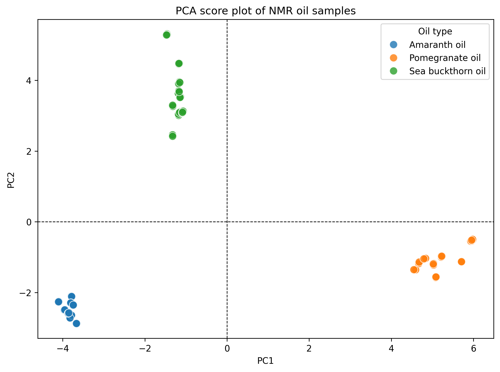
Project aim
The analysis tests whether numerical NMR profiles contain reproducible patterns that can separate the three investigated oils, identify informative chemical shifts and classify samples from manufacturers excluded from model training.
Inspect metadata, remove duplicated analytical records and complete missing NMR values without altering the oil labels.
Transform the wide NMR table into normalized MySQL tables and execute reusable queries stored in a separate SQL file.
Use statistical tests, PCA, K-means and grouped KNN validation to examine descriptive and predictive differences between oils.
Dataset
The measurements were provided by the course instructor. The original experimental source, sample-preparation protocol, measurement conditions and NMR acquisition parameters were not supplied. The project therefore focuses on computational analysis of the provided numerical values.
Measurements before duplicate removal.
One duplicated analytical profile was removed.
Chemical-shift intensity variables used in the analyses.
Amaranth, pomegranate and sea buckthorn oils.
Used as groups in leave-one-manufacturer-out validation.
Distributed across seven NMR variables.
Workflow
oils_processed.csv.Methodology
Duplicate detection, missing-value analysis, imputation, date standardization, validation and processed-data export.
Open notebook 01Relational DataFrames, MySQL schema creation, data insertion, external SQL queries, joins, aggregations, CTEs and window functions.
Open notebook 02Statistical screening, volcano plots, correlations, PCA, K-means and grouped KNN classification.
Open notebook 03Technologies
Used to organize the workflow and connect preprocessing, SQL and machine learning.
Used for cleaning, reshaping, validating and summarizing tabular NMR data.
Used for numerical arrays, transformations and matrix operations.
Used for Kruskal-Wallis and Welch pairwise statistical tests.
Used to create and query normalized relational tables.
Used for joins, aggregations, CTEs, CASE expressions and window functions.
Used for imputation, scaling, PCA, clustering, KNN and grouped validation.
Used for publication-style scientific plots.
Used for heatmaps, score plots, distributions and result summaries.
Used to combine code, outputs, interpretation and reproducible documentation.
Notebook 01
Seven NMR variables contained missing observations. The largest number occurred at 6.45 ppm, where 54 of the 150 raw values were missing. KNN imputation produced a complete NMR matrix while preserving oil labels and record counts. The processed dataset is nearly balanced: 50 amaranth, 49 pomegranate and 50 sea buckthorn samples.
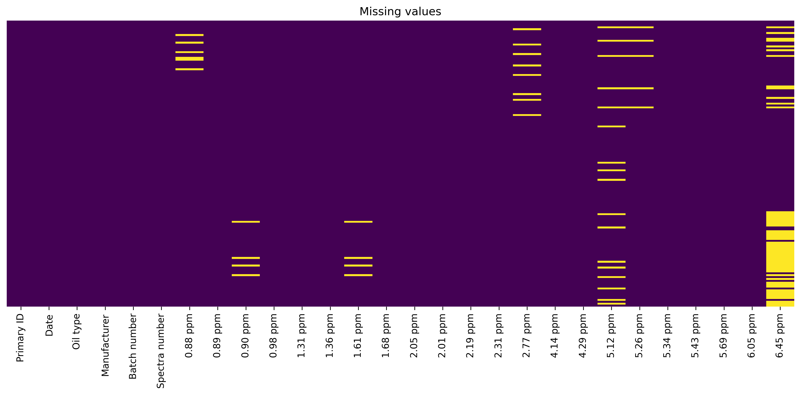
Notebook 02
The processed table was transformed into a relational structure with 149 rows in
samples and 3,278 rows in nmr_measurements.
The tables are connected through a foreign key on sample_id.
One row per processed analytical record.
One intensity per sample and chemical shift.
samples and nmr_measurements.
A, B, C and D represented in the database.
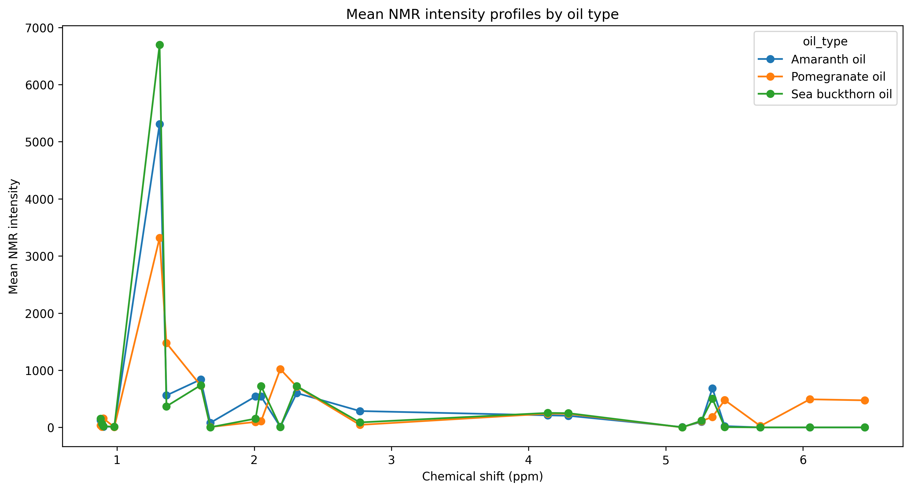
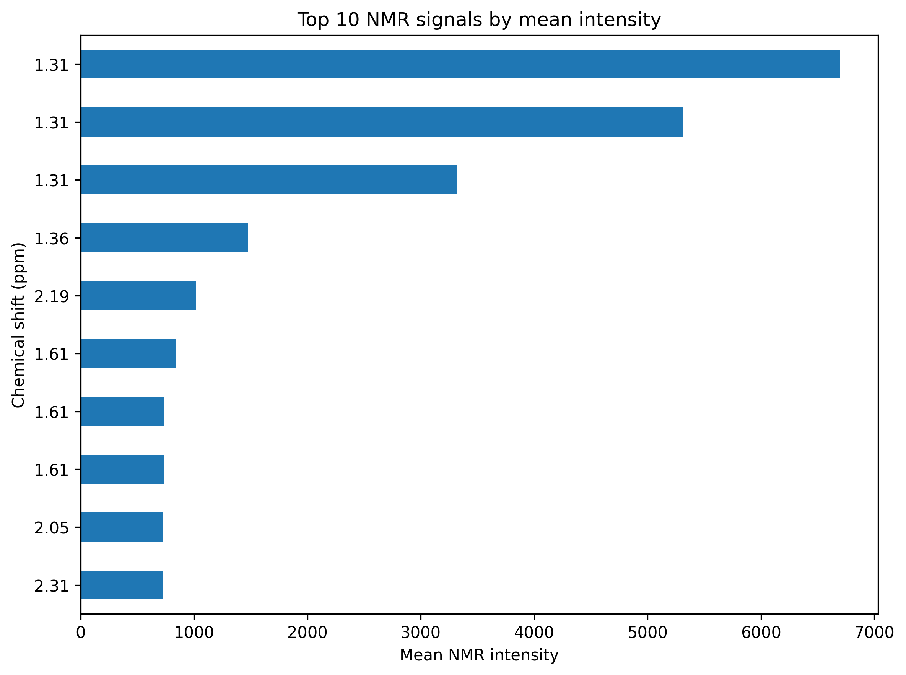
Statistical analysis
Each NMR variable was screened with the Kruskal-Wallis test and Benjamini-Hochberg FDR correction. Pairwise volcano plots then combined Welch’s t-test, FDR and log2 mean-ratio thresholds.
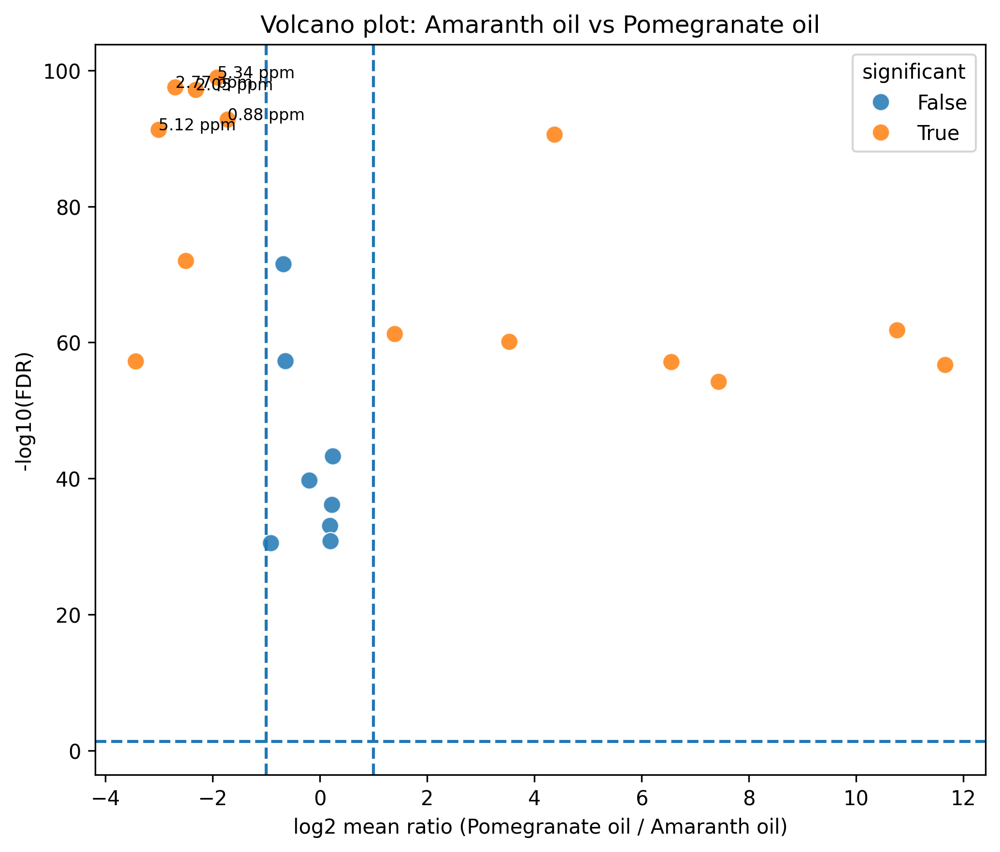
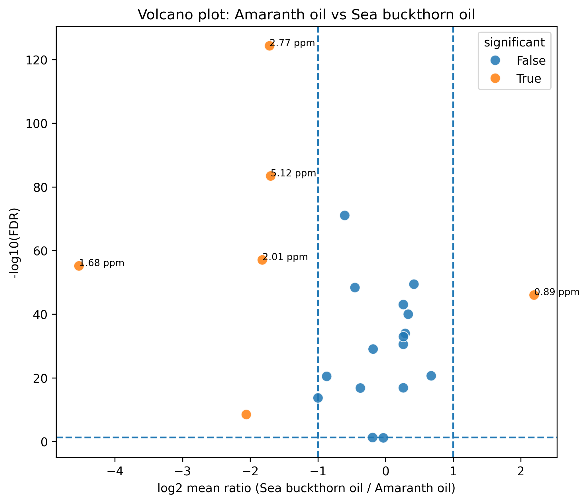
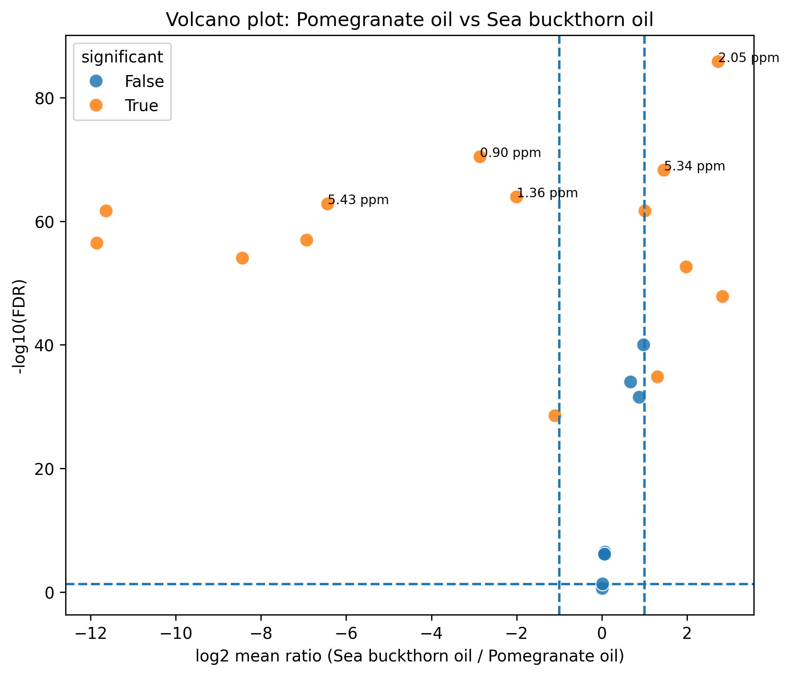
Multivariate analysis
Strong correlations between several NMR variables indicate partially redundant spectral information. PCA compresses the 22 variables while retaining most of the dataset variance.
Largest proportion of explained variance.
Additional orthogonal separation.
Total variance retained in the main score plot.
Cumulative variance after the third component.
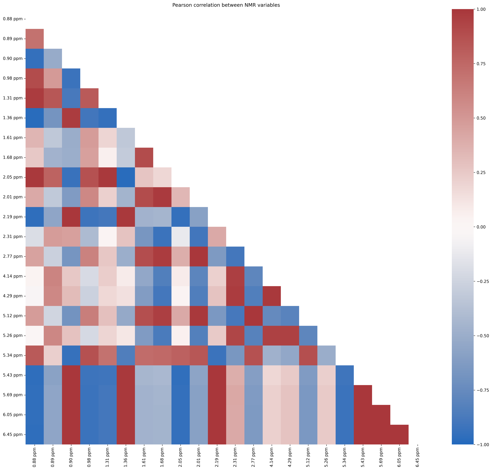
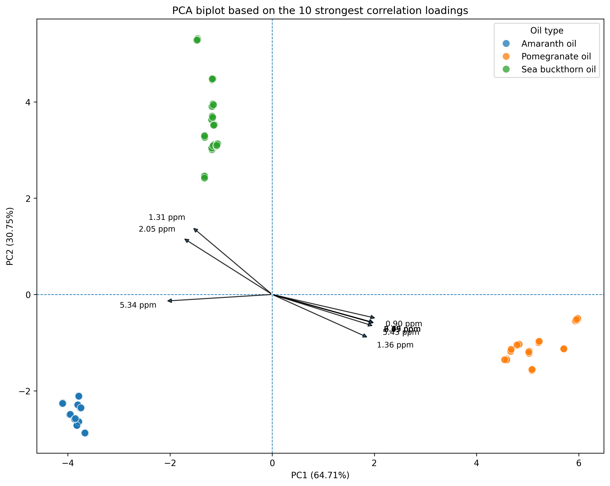
Clustering and classification
K-means tests whether the structure appears without class labels, while KNN evaluates supervised prediction for manufacturers excluded from training.
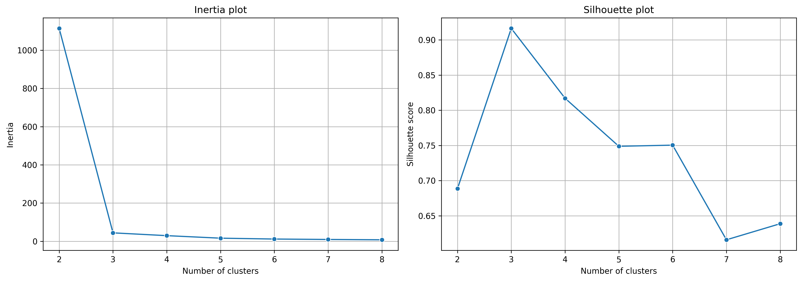
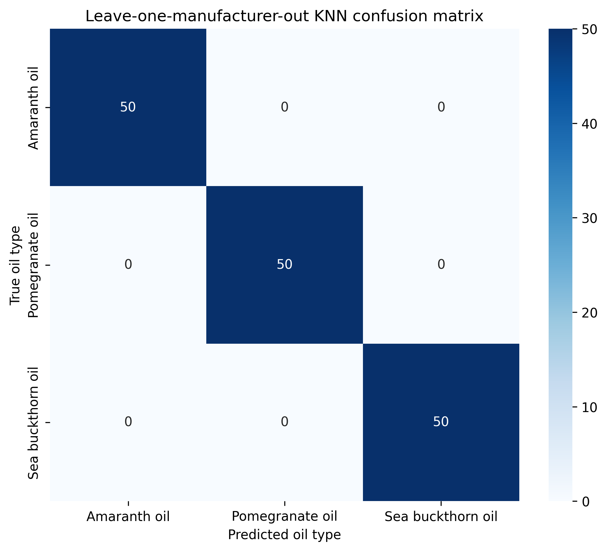
Perfect classification reflects the strong separation of these three supplied oil groups. It is dataset-specific and should not be treated as universal performance for other oils, laboratories or acquisition conditions.
Key findings
Statistical comparisons, PCA, clustering and classification all support strong separation between amaranth, pomegranate and sea buckthorn oils.
PC1 and PC2 explain 95.46% of total variance and provide stronger class separation than the PC1–PC3 projection.
K-means with three clusters gives a silhouette score of 0.916 and an adjusted Rand index of 1.000.
Leave-one-manufacturer-out KNN achieved 100% accuracy using all signals, selected PCA-loading signals and even the strongest individual signal.
The dataset contains only three strongly separated oil types and four manufacturers, with no independent experimental dataset available for external validation.
Repository
The repository separates raw and processed data, notebooks, reusable SQL queries and exported figures.
nmr-oils-analysis/
├── index.html
├── nmr.css
├── README.md
├── data/
│ ├── raw/
│ │ └── oils_nmr.csv
│ └── processed/
│ └── oils_processed.csv
├── notebooks/
│ ├── 01_data_preparation.ipynb
│ ├── 02_sql_analysis.ipynb
│ └── 03_multivariate_analysis.ipynb
├── sql/
│ └── oils_analysis.sql
├── diagrams/
│ ├── 01/
│ │ ├── class_distribution.png
│ │ └── missing_values_heatmap.png
│ ├── 02/
│ │ ├── sql_mean_intensity_by_oil.png
│ │ └── sql_signal_ranking.png
│ └── 03/
│ ├── correlation_heatmap.png
│ ├── pca_score_plot.png
│ ├── pca_biplot.png
│ ├── kmeans_clusters.png
│ ├── knn_confusion_matrix.png
│ └── volcano_*.png
├── .env.example
└── .gitignoreChallenges
The missing-value pattern required a method that preserved all samples and could be fitted safely inside machine-learning validation.
A wide analytical table had to be transformed into normalized sample and measurement tables without losing links to metadata.
Imputation, scaling, feature selection and parameter tuning had to be performed without access to the held-out manufacturer.
What I learned